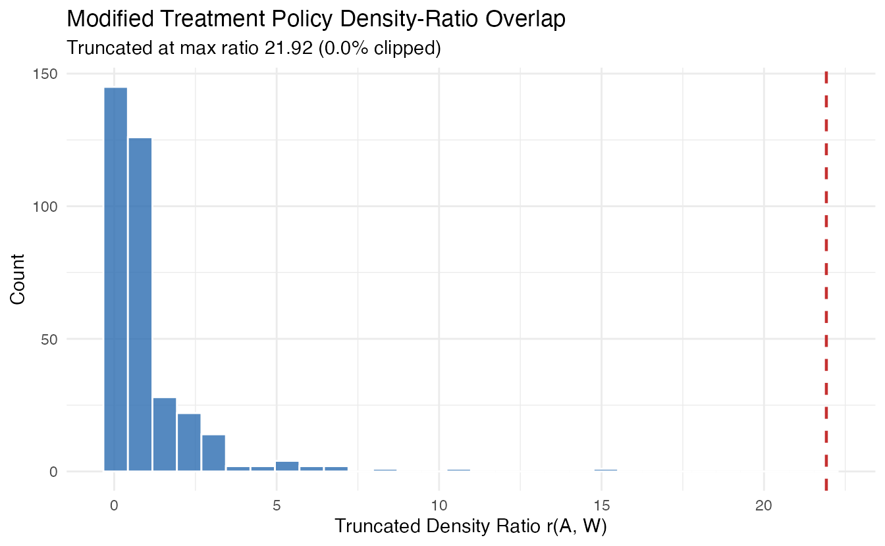
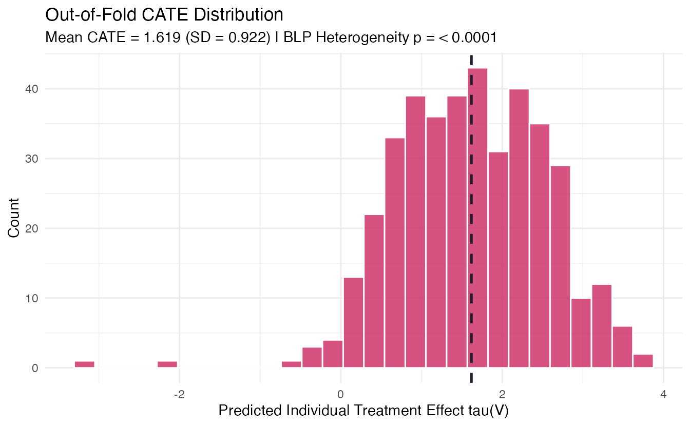

Beyond binary point-treatment effects, tidytmle supports
Modified Treatment Policies (LMTP) (Díaz et al., 2021)
for continuous exposures and Doubly Robust Conditional Average
Treatment Effect (DR-Learner CATE) estimation (Kennedy,
2023).
Continuous Exposures via shift() and
scale_tx()
Asking “what if every patient received dose = 0 vs. dose =
10?” often forces impossible extrapolations for continuous
exposures. Modified Treatment Policies solve this by shifting each
person’s observed exposure realistically (e.g., +1 unit or
90% of current dose). Use shift(delta) for
additive policies
or scale_tx(factor) for multiplicative policies
.
Internally, tidytmle estimates the treatment density ratio
nonparametrically using stacked cross-validated classification workflows
without parametric normality assumptions:
library(tidytmle)
df_cont <- sim_causal_cohort(
n = 350,
outcome_type = "continuous",
treatment_type = "continuous",
seed = 202
)
truth_cont <- attr(df_cont, "truth")
# Additive shift (+1 unit)
fit_shift <- tmle_spec(
outcome = y,
treatment = a,
covariates = c(age, sex, starts_with("lab_")),
estimand = shift(1.0)
) |>
set_resamples(v_folds = 4L) |>
fit(data = df_cont)
# Multiplicative policy (90% of current dose)
fit_scale <- tmle_spec(
outcome = y,
treatment = a,
covariates = c(age, sex, starts_with("lab_")),
estimand = scale_tx(0.9)
) |>
set_resamples(v_folds = 4L) |>
fit(data = df_cont)
summary(fit_shift)
#>
#> ── Plain-English TMLE Summary ──
#>
#> Sample: 350 rows (350 observed outcomes) | 4-fold CV-TMLE
#>
#> ── 1. What the Causal Estimates Mean
#> ℹ shift(1): Expected outcome under Modified Treatment Policy is 4.8942 (95% CI [4.4982, 5.2903], p = < 0.0001).
#>
#> ── 2. What the Targeting Step Did
#> Fluctuating along the Clever Covariate shifted the initial ML plug-in
#> estimate by +0.2738 (epsilon = 0.0816) to remove residual confounding
#> bias.
#>
#> ── 3. Statistical Health Check & Next Steps
#> ✔ Convergence: EIF estimating equation solved (mean EIF = -1.49e-14).
#> ✔ Positivity: 0.0% clipped at g_bounds [0.000, 21.918] (ESS: treated = 111.2, control = 350).
#> ! High leverage: Top observation accounts for 30.5% of EIF variance. Inspect `augment(fit)` sorted by .eif_leverage.
dplyr::bind_rows(tidy(fit_shift), tidy(fit_scale)) |>
dplyr::mutate(true_value = c(truth_cont$true_shift_1, truth_cont$true_scale_09))
#> # A tibble: 2 × 9
#> estimand term estimate std.error statistic p.value conf.low
#> <chr> <chr> <dbl> <dbl> <dbl> <dbl> <dbl>
#> 1 shift(1) shift(… 4.89 0.202 24.2 1.31e-129 4.50
#> 2 scale_tx(0.9) scale_… 3.67 0.125 29.2 5.31e-188 3.42
#> # ℹ 2 more variables: conf.high <dbl>, true_value <dbl>
autoplot(fit_shift, type = "overlap")
Heterogeneous Treatment Effects via fit_cate()
Because we never observe both and for the same person, we cannot simply regress on patient covariates directly. Kennedy’s (2023) Doubly Robust (DR) Learner solves this by constructing a cross-fitted pseudo-outcome from the TMLE fit’s Efficient Influence Function:
Because
whenever either
or
is consistently estimated, fit_cate() can feed
directly into any tidymodels regression workflow to
estimate individual treatment effects
,
run Chernozhukov et al.’s (2018) Best Linear Projection (BLP)
heterogeneity test via tidy(), predict onto new cohorts via
predict(), and quantify treatment-prioritization
performance via qini_auc():
df_het <- sim_causal_cohort(n = 400, outcome_type = "continuous", seed = 303)
truth_het <- attr(df_het, "truth")
fit_ate <- tmle_spec(
outcome = y,
treatment = a,
covariates = c(age, sex, starts_with("lab_"))
) |>
set_resamples(v_folds = 4L) |>
fit(data = df_het)
cate <- fit_cate(fit_ate, covariates = c(age, sex, lab_1, lab_2, lab_3), v_folds = 4L)
tidy(cate)
#> # A tibble: 2 × 7
#> term estimate std.error statistic p.value conf.low conf.high
#> <chr> <dbl> <dbl> <dbl> <dbl> <dbl> <dbl>
#> 1 ATE (BLP In… 1.64 0.126 12.9 3.23e-32 1.39 1.89
#> 2 Heterogenei… 0.916 0.137 6.67 8.55e-11 0.646 1.19
qini_auc(cate)
#> # A tibble: 2 × 3
#> .metric .estimator .estimate
#> <chr> <chr> <dbl>
#> 1 qini_auc standard 0.234
#> 2 auuc standard 1.05
# Out-of-fold CATE accuracy against true individual effects
aug_cate <- augment(cate)
cor(aug_cate$.cate, truth_het$true_cate)
#> [1] 0.8498853
# Predict individualized treatment effects on new patients
predict(cate, new_data = head(df_het, 5L))
#> # A tibble: 5 × 1
#> .pred
#> <dbl>
#> 1 0.681
#> 2 1.73
#> 3 2.51
#> 4 3.33
#> 5 0.0656
autoplot(cate, type = "cate")
autoplot(cate, type = "qini")